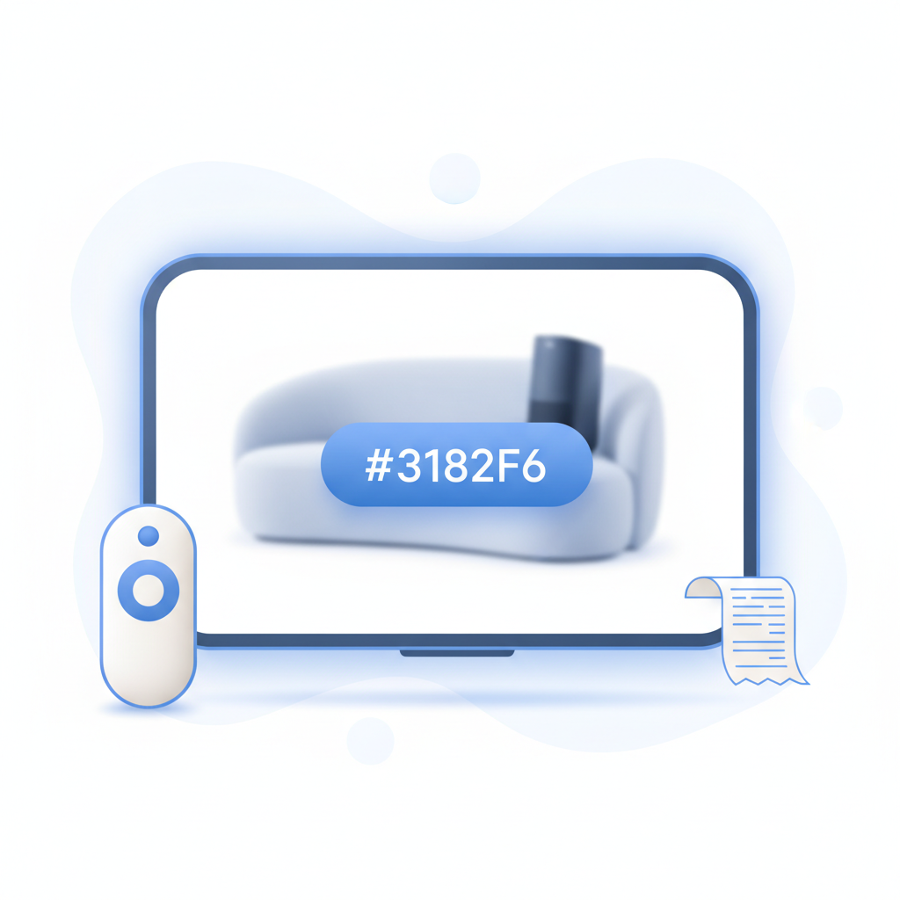
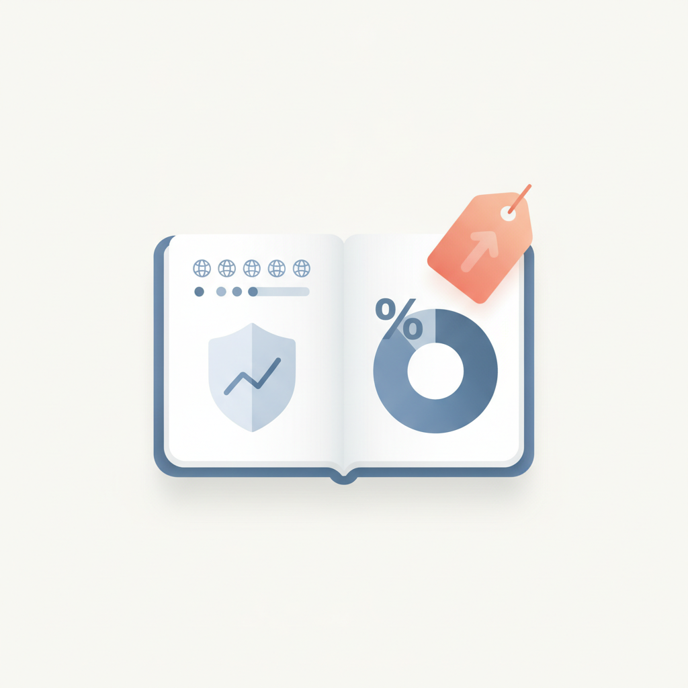
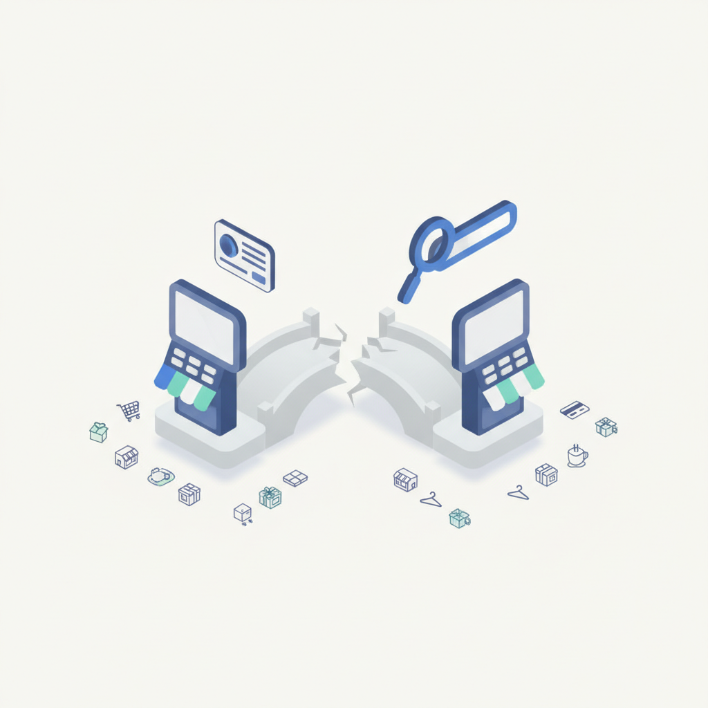
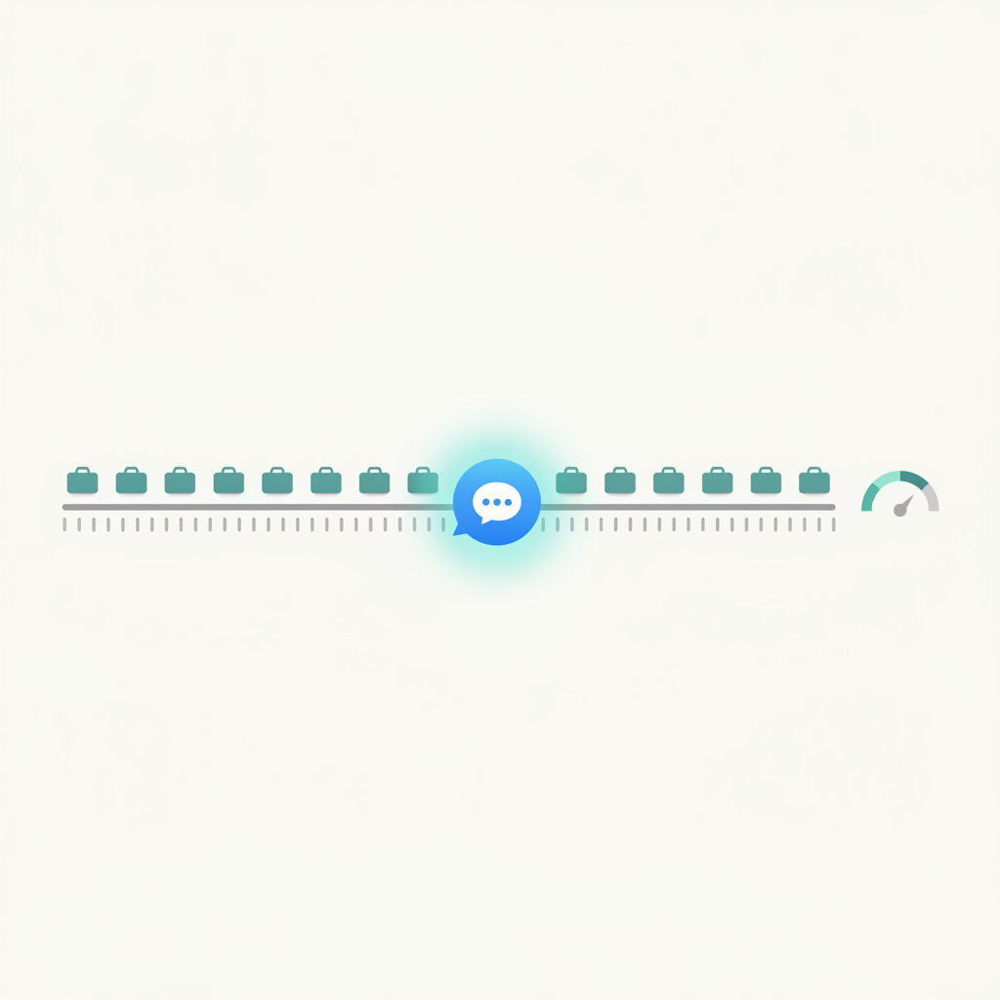
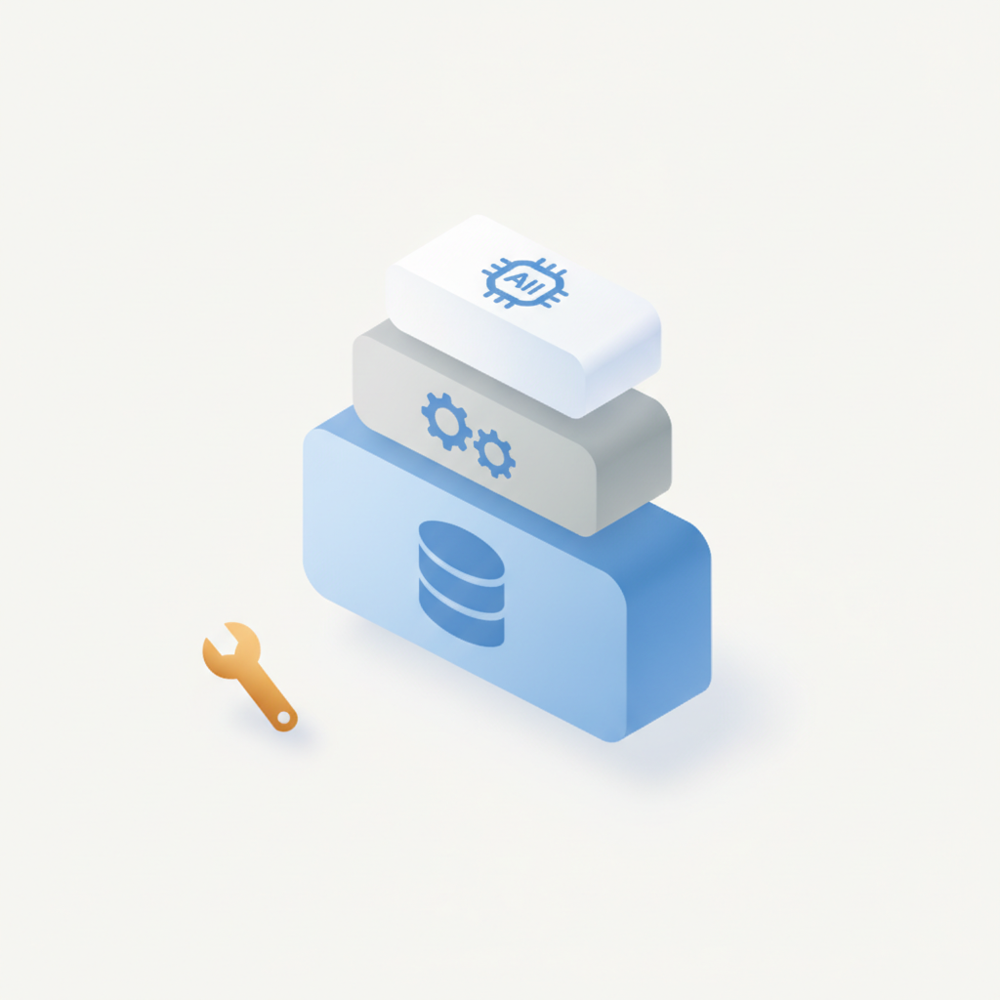
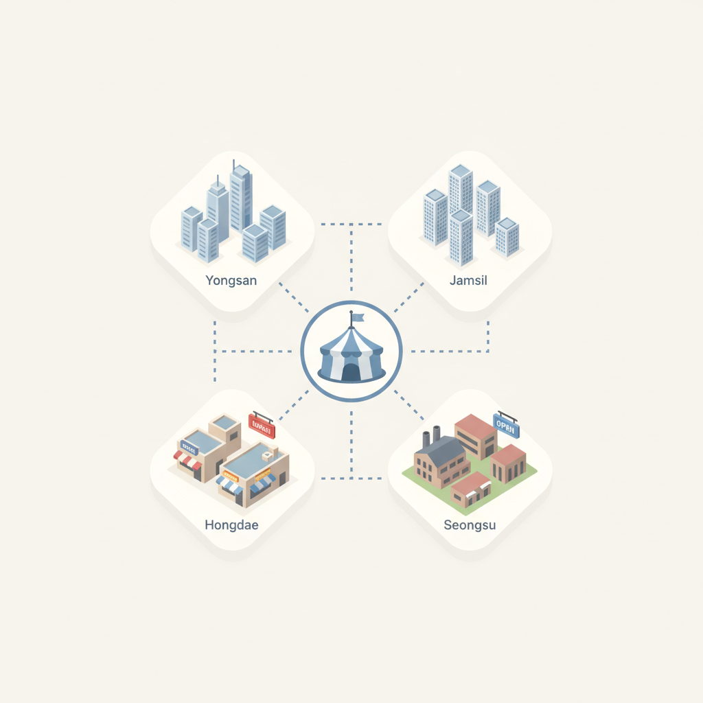

안녕하세요! 목요일 마케팅 소식 전해드립니다 😊 오늘은 헤이팝에서 전한 프로스펙스 소식이 흥미롭습니다. 45년 헤리티지를 바탕으로 새로운 거점을 열었다는 이야기인데, 오래된 브랜드가 공간을 통해 다시 존재감을 각인시키는 방식은 요즘 팝업스토어 트렌드와도 맞닿아 있습니다. 실제로 성수·더현대에 집중됐던 팝업이 용산·잠실·홍대로 빠르게 퍼지며 상권 자체를 재편하고 있는 지금, 브랜드에게 공간은 단순한 체험 채널을 넘어 아이덴티티를 재정의하는 무대가 되고 있습니다.
칸 라이언즈 서울 2026에서 나온 미디어·커머스 관련 발표도 함께 읽으면 흐름이 선명해집니다. 제일기획 발표처럼 미디어 플랫폼이 콘텐츠 노출에서 결제까지 직접 연결하는 방향으로 확장되고 있고, 삼성전자가 제시한 CTV '원클릭 쇼퍼블 광고'는 TV를 보다가 바로 구매로 이어지는 소비자 여정을 현실로 당기고 있습니다. 광고와 커머스 사이의 경계가 흐려질수록, 브랜드가 어느 접점에서 어떤 방식으로 전환을 설계하느냐가 미디어 전략의 핵심 질문이 되고 있습니다.
주말이 코앞으로 다가온 목요일 아침입니다. 오늘 하루도 활기차게 시작하세요! 🙌
광고·커머스 경계 허문다…미디어 플랫폼, 결제까지 확장
제일기획 김지희 팀장이 '칸 라이언즈 서울 2026'에서 발표한 2026 미디어 트렌드에 따르면, 콘텐츠 노출에 머물던 미디어 플랫폼들이 AI·빅데이터를 앞세워 결제 영역으로 빠르게 확장하고 있다. 콘텐츠·커머스 플랫폼과 인플루언서까지 소비자 관심을 실구매로 전환하는 풀퍼널 경쟁에 뛰어들었다. 마케터는 인지~구매를 단일 여정으로 설계하는 풀퍼널 전략을 미디어 플래닝 단계부터 반영해야 할 시점이다.
›
2삼성전자 '원클릭 쇼퍼블 광고'로 TV→커머스 혁신
김원종 삼성전자 상무는 '칸 라이언즈 서울 2026'에서 커넥티드 TV(CTV)가 인지부터 구매까지 소비자 여정을 단번에 응축하는 '원클릭 쇼퍼블 광고' 비전을 제시했다. TV 시청 중 광고를 보고 즉시 결제까지 이어지는 구조로, 기존 쇼퍼 저니를 근본적으로 단축하겠다는 구상이다. CTV 광고 집행을 고려하는 마케터라면 커머스 연동 포맷을 조기에 검토할 필요가 있다.
›
3소비자 52%, AI 데이터 투명 브랜드에 더 지불 의향
유저센트릭스의 'State of Digital Trust 2026' 보고서에 따르면 7개국 소비자의 52%가 AI의 데이터 활용 방식을 투명하게 공개하는 브랜드에 더 많은 비용을 지불할 의향이 있다고 답했다. AI 개인정보 활용 방식이 소비자의 브랜드 선택과 구매 결정에 직접 영향을 미치고 있다는 뜻이다. 마케터는 AI 기반 개인화 캠페인 설계 시 데이터 사용 방침을 명확히 고지하는 것을 브랜드 신뢰 구축 전략의 일환으로 삼아야 한다.
›
4네이버-토스 소송전, 15만 소상공인 광고 생태계 흔든다
네이버가 토스의 리워드형 광고 '출석 체크 미션'이 검색 순위를 왜곡했다며 경찰에 고소했고, 토스플레이스는 네이버의 자사 POS 차별을 이유로 공정위 제소를 검토 중이다. 두 회사의 갈등은 광고·오프라인 매장 관리 영역에서 사업이 겹치면서 발생한 구조적 충돌로, 15만 소상공인이 직접적 영향권에 놓였다. 소상공인 대상 광고·CRM 플랫폼 의존도를 분산하는 전략의 필요성이 커지고 있다.
›
5WARC·링크드인 연구: B2B 브랜드 'Buyability' 높이는 3R 전략
WARC·링크드인·라이언즈 어드바이저리 공동 연구에 따르면 B2B 구매 결정까지 평균 272일이 걸리고 22명의 이해관계자가 참여하며, 2025년 B2B 구매자의 94%가 구매 과정에서 LLM을 활용한 것으로 나타났다. 제품 성능·가격 외에 사회적·감정적 요인과 AI 검색 노출 여부가 브랜드 선택에 영향을 미치고 있다. B2B 마케터는 LLM 최적화(LLM SEO)와 감성적 브랜드 빌딩을 구매 퍼널 전략에 함께 통합해야 한다.
›
6마케터의 AI 과제, '도입'에서 '기반 구축'으로 이동
엡실론의 'State of AI in Marketing: 2026 Benchmark Study'에 따르면 AI 도입률은 사실상 포화 상태에 도달했으며, 이제 경쟁 우위는 도입 여부가 아니라 데이터·프로세스·조직의 AI 기반을 얼마나 탄탄히 갖췄느냐에서 갈린다. 미국 중심 보고서이지만 국내 마케팅 환경에도 유사한 흐름이 적용된다는 평가다. 마케터는 AI 툴 도입 단계를 넘어 데이터 인프라 정비와 조직 역량 내재화에 우선순위를 두어야 한다.
›
7팝업스토어, 성수·더현대 넘어 상권 재편 가속
과거 성수동과 더현대서울에 집중됐던 팝업스토어가 용산·잠실·홍대 등으로 확산되며 상권 지형을 재편하고 있다. 팝업스토어가 공실률 해소 수단으로 부상하면서 유치 후 건물 가치를 끌어올리는 사례도 잇따르고 있다. 오프라인 브랜드 경험을 기획하는 마케터에게는 입지 선택지가 넓어진 만큼 상권별 타깃 적합성을 면밀히 검토할 필요가 있다.
›

브랜드 진단부터 지금 당장 해야 할 우선순위까지,
30분 무료 상담에서 함께 정리해드려요.
이미 수십 개 브랜드가 상담받았습니다.
내 브랜드처럼, 함께 고민하는 팀원의 마음으로 봅니다.
스타트업 대표·마케팅 담당자를 위한 30분